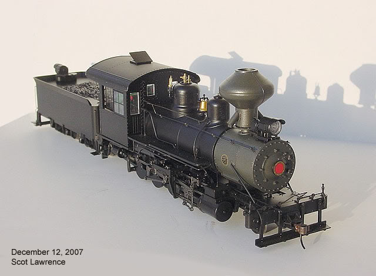
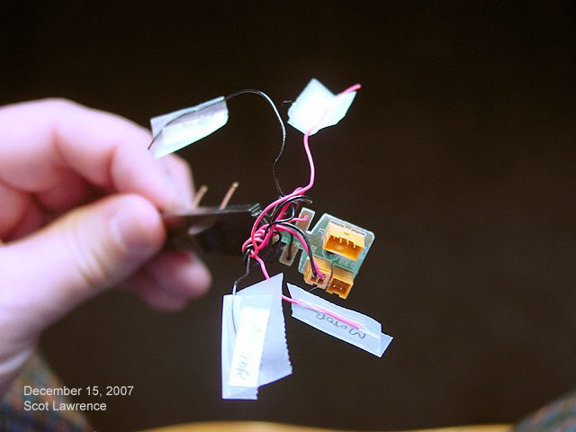
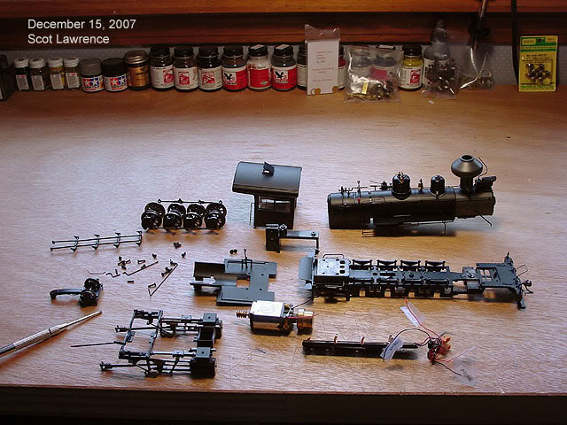

Converting a Bachmann On30
outside frame 2-8-0
into an On2 model of SR&RL
2-6-2 #23.
Converting a Bachmann On30
outside frame 2-8-0
into an On2 model of SR&RL
2-6-2 #23.
| Welcome
to Page 2! It is now December 2007, 14 months later, and the project finally begins! First,
some photos of the victim as it arrived..
The On30 outside-frame Consolidation by Bachmann:

December 13, 2007 Deconstruction begins..lets take this engine apart and see what it looks like:
First
steps - pull off the brake shoe unit, it pulls straight out in one piece.
(im going to have to figure out a way to re-attach those driver electric pickups..) The
On2 track gauge is 12.7mm.
yep..its
too wide. That
leaves only two options:
The frame is one solid metal casting, the portion between the drivers is attached to the "outside frame" portion that sits outside the drivers. Its not as simple a matter to grind down the frame as it would be with a traditional "inside frame" locomotive..there are actually two frames in this case, an "inner frame" between the drivers and the "outside frame" between the drivers and the counterweights. A simple way, if you have the tools to do this, would be to remove 3.8 mm (the difference between On30 and On2) right down the middle of the frame, then stick the two halves together again..but I dont have any kind of tool that could do this. And besides..the driver spacing isnt correct anyway..the drivers are too close together for SR&RL #23.. So
as I suspected all along, im going to have to make a new frame!
and..as
a bonus for making a new frame, I can get the correct driver spacing!
Drivers
are out.
 I always
try to cut as few wires as possible.

All
apart!
Now that everything is apart, I can take some real measurements: No.
23 needs cylinder width of 35mm (at cylinder centers)
No.
23 needs a cab width of 43 mm.
(The width of the Bachmann Forney, another upcoming regauge project, is PERFECT for On2! (except for the gauge of course)..that will make the converting of the Forneys to On2 much easier..no major body work necessary.) But
of course the Forneys are already models of Maine 2-foot prototypes..
No.
23 boiler diameter is 49", thats 26mm.
No.
23 driver diameter is 33", thats 17.5mm.
Conclusions
after disassembly?
I will
just have to build a new frame for everything to sit on.
Right
about now someone reading this is probably thinking "wouldnt it be easier
to just scratch-build the entire locomotive and forget about using the
Bachmann engine?"
You start with a complete engine, you take it apart and put it back together, but you put it back together according to a different set of blueprints..you end up with a totally different complete engine. For
this bash, I am probably going to have to scratchbuild the frame and cab..thats
it.
December 19, 2007 I have
looked at the drivers to see how they can be regauged.
The counterweights are quartered, and are press-fit onto the ends of the axles, and the axle end has a notch that keeps the weights quartered. The drivers have round openings for the axels (no need for the drivers themselves to be quartered) and each driver is insulated from the axle by a plastic bushing, both sides. Unfortunately
the drivers cant be regauged by simply moving the drivers in or out on
the axels, because the axle is thicker where the bushing butts up..thats
what keeps the drivers in (On30) gauge..the axels are designed for On30,
period. there is no room to move in either direction.
Ideally, new axles could be fairly easily made on a lathe, but since I dont have a lathe, and I dont know anyone who does, necessity forces me to ask Frank Zappa's band for other ideas.. fortunately, they have helped me before: So I will use that same method to regauge from On30 to On2.. I will have to remove the necessary amount from the middle of the axles (3.8mm in this case) then insert the cut axle stumps into a new brass tube to create the new axle.. Unfortunately with that method the only thing that "holds the quarter" is glue..but for such a tiny engine, glue (probably super glue) should do the job just fine...it worked fine in 1/29 scale!
And
thats where things stand for now..
I will
probably start on the cab first..
|